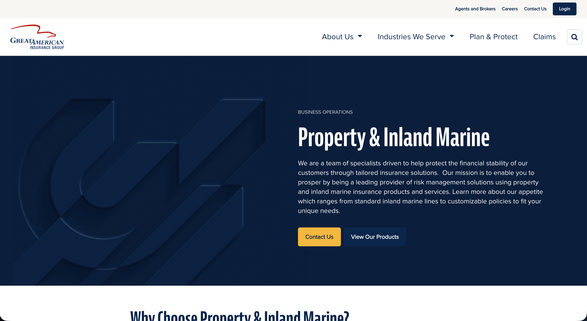

A full redesign of an antiquated corporate website — bringing a major insurance brand into the modern era through close collaboration between business stakeholders, corporate communications, and an external design agency.

Great American Insurance Group's corporate website had fallen significantly behind — both in visual design and in its ability to communicate the company's scale, reputation, and offerings to the people who needed to find them. The site was antiquated in structure, difficult to navigate, and no longer representative of a leading insurance brand.
I served as the UX Design representative from the business, bridging the gap between our internal corporate communications team and an external design agency brought in to lead the redesign. My role was to ensure that UX principles, user needs, and business requirements were consistently represented throughout the engagement.
"How might we modernize a large insurance company's digital presence in a way that serves both external audiences and internal stakeholders — while successfully navigating the complexity of an agency partnership?"
I spent the first three weeks doing a full UI audit — cataloguing every unique component, color value, and spacing decision in production. The results were sobering but useful: a clear picture of what needed to be unified, deprecated, or rebuilt.
47 unique component variants in Figma. 63 unique components in code. 0 shared naming conventions between design and engineering. 11 hardcoded hex values that weren't in any design file.
Designers wanted fewer decisions to make per screen. Engineers wanted predictable, documented components. PMs wanted faster velocity. Everyone was frustrated but nobody had time to fix it.
I also ran a competitor and reference audit across 12 public design systems (Material, Radix, Atlassian, Linear, etc.) to identify structural patterns and token naming conventions worth adopting rather than inventing.
The system was built in three layers, intentionally sequenced so each layer could be validated before the next began.
Crucially, I embedded one engineer (rotating every two weeks) as a co-author of the system from day one. This ensured the Figma components mapped directly to what was buildable in React, and created internal advocates in the engineering team.
The system shipped in phases over 20 weeks. Adoption was tracked by measuring how many new production screens used system components versus bespoke implementations. Within 8 weeks of the first stable release, adoption was at 84%.
Two years later the system is still in active use and has expanded to cover mobile (React Native) and a white-label variant for enterprise customers — a use case nobody had anticipated at the start.
Lessons learned: A design system is never "done." The teams that succeed treat it like a product with a backlog, a roadmap, and real stakeholders — not a one-time project.